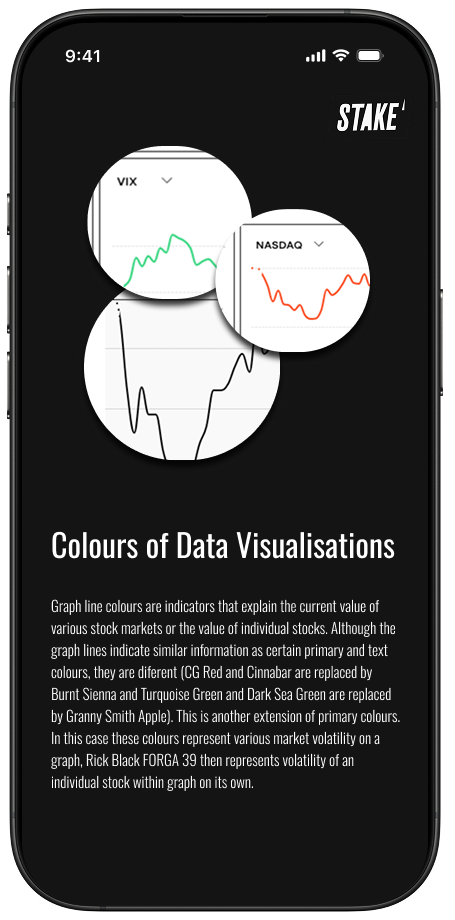
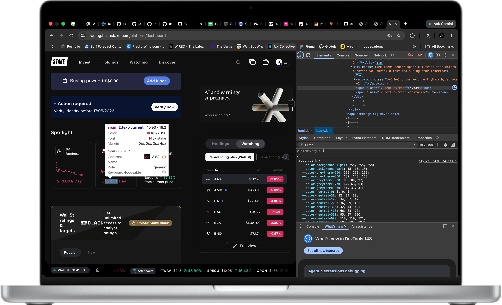

Principles
The system centred on transparency, cleanliness, and simplicity: minimal UI, clear signals, and consistent hierarchy in an environment where financial data must be understood quickly.
Case Study - Design Systems

Context
Stake was evolving quickly across its web platform, mobile app, and marketing surfaces. That pace created pressure: new features were rolling out, internal and external communication needed structure, and designers and developers needed a clearer shared framework.
The task was to define a design system that covered style guidance, UI components, typography, colour, iconography, photography, and a set of principles that could support future product growth.
Foundations
The system centred on transparency, cleanliness, and simplicity: minimal UI, clear signals, and consistent hierarchy in an environment where financial data must be understood quickly.
I documented colour behaviour, type usage, iconography, spacing, and component rules so product patterns could be reused instead of re-invented across every new screen.
The work gave Stake a stronger internal reference point for design and development decisions, reducing ambiguity and improving consistency across digital assets.
Method
Because Stake already had public product surfaces, I used browser inspection and comparative review of public design systems to identify patterns worth formalising. The work was part reconstruction, part codification, and part forward-looking framework design.
A large part of the value came from turning existing interface decisions into something documented, repeatable, and easier for teams to use consistently.

Takeaway
For a trading product, clarity is not a visual preference - it is functional. Strong systems make high-stakes interfaces easier to build and easier to trust.

Solution
The final deliverable was a comprehensive style guide covering all foundational elements of the Stake platform. Click to enlarge and scroll to zoom in on any section.
Scroll to zoom · Click outside to close